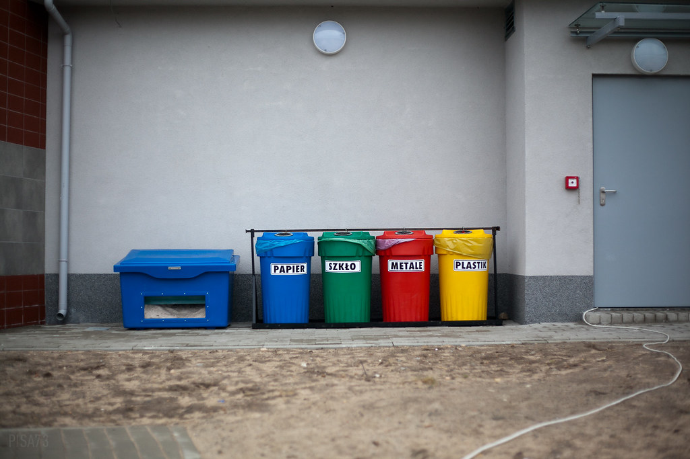
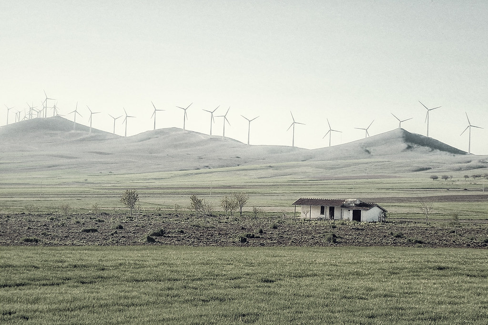
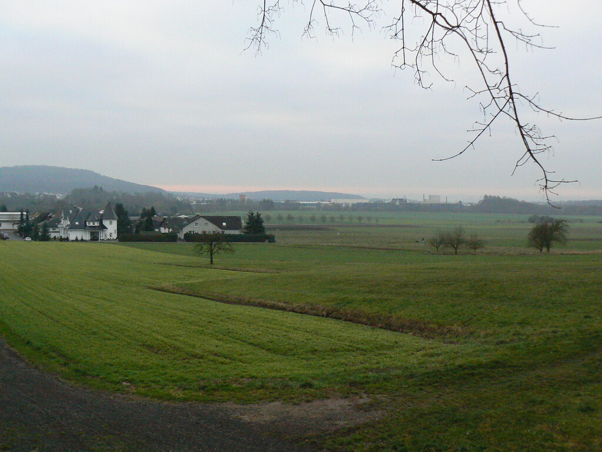

The German Environmentalism
The Germans regard environmental protection as the second biggest problem in the country after employment. According to a recent poll conducted by the Federal Ministry of Environmental Protection, 85% said that environmental issues should be second only to employment, and 75% of Germans hope that Germany will continue to maintain its leading position in the EU. During the German election in 2002, the Social Democratic Party did not do a good job in the past few years of governance and caused Germany to fall into economic difficulties, the economic Growth declined from 2.9% in 2000 to zero in 2003 (Bill Smaldone , German Social Democracy in Crisis). At that time, a flood hit several cities in Germany (Germany Estimates Billions in Flood Damage, June 11, 2013). Former Prime Minister Schröder seized the opportunity to tell people about the importance of environmental protection and adopted many environmental protection measures, which made people very much recognized him.  The popularity of the German Green Party, which is based on environmental protection formed in 1980s, has risen (How Germany's Green Party Keeps Winning, SIMON SCHÜTZ). The former Green Party leader Fisher is regarded by the Germans as the most favorite politician. One of the reasons is that Fisher is riding a bicycle to work, and is an eco-friendly image of vegetarians has won people's favor (David P. Conradt, Green Party of Germany).
The environmental awareness of Germans has gone through the process of changing from passive to personal. Garbage classification best reflects the environmental awareness of Germans. However, garbage sorting brings many troubles to residents, especially those living in high-rise buildings. They have to send more than a dozen kinds of garbage to the classified garbage bins downstairs. They may have to run up and down several times. However, Germans not only seriously implement the regulations on garbage classification, but also consciously supervise others. Most people find someone throwing the trash in the wrong place, they will pick it up and put it back. In Germany, most people who go to the supermarket to shop will bring their own shopping bags and the use of recycled paper is more popular, from student exercise books to receipt papers for shop assistants, from envelopes and stamps to various newspapers, magazines, and restaurants (The German Way & More, german-way.com).
More Info 